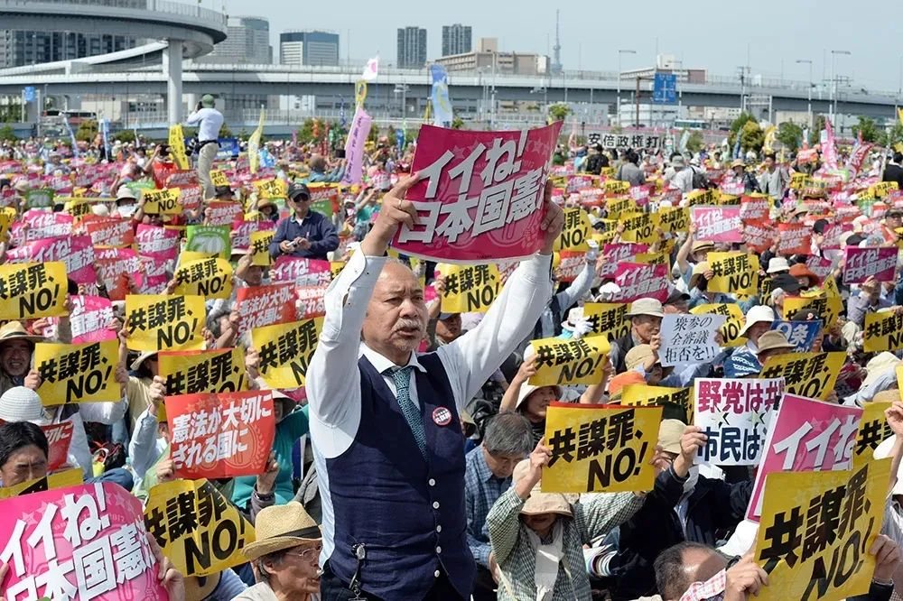
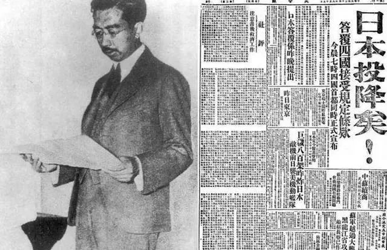

收录于合集
以下文章来源于文化纵横 ，作者李永晶
 文化纵横 .
文化纵横 .
倡导文化重建，共同思想未来，发掘不一样的深度阅读。

导 读
近日，日本自民党总裁大选落下帷幕，岸田文雄从四人竞选中胜出，或将成为日本下一任首相。值得关注的是，大选的四位候选人中，三位都旗帜鲜明地打出了“保守牌”：高市早苗高调声明要继续参拜靖国神社，河野太郎表示“日本最重要的基础”是“皇室和日语”，被认为“重经济轻武装”的岸田文雄也罕见表露对日本“拥有对敌基地攻击能力”的支持。日本政客竞相打“保守牌”，背后真正值得我们担忧的是什么？
要理解当今日本及其政治逻辑，“右翼”是无法回避的议题。本文提出“右翼的日本”的视角，亦即日本民族国家自身需要从“右翼”的角度加以理解。历史上，日本右翼曾是日本革新思想的来源，是日本民族国家建构和政治演化的一种独特力量，也是涵盖日本民间、思想界、政界的一种复合结构。值得注意的是，日本右翼具有彻底的行动主义性格，这使其迈出军国主义、对外侵略的一步。
作者指出，当今日本右翼面临思想空洞化的危机。面对这种没有思想支撑的局面，日本社会的右倾化与日本右翼的行动能力，成为日本社会的一大潜在危险。本文转载自“文化纵横”，仅代表作者观点，欧亚系统科学研究会特此编发，供诸君思考。
重新理解日本的性格及品格：
论日本的右翼与右翼的日本
自民党总裁大选，岸田文雄成为胜者。图源：nikkei asia
在理解近代以降的日本政治时，“右翼”是所有学者都无法无视的现实，因而迄今得到了多角度的理解；比如，在政治思想研究领域，“保守主义”就被用于指称日本右翼的思想倾向与特点。那么到底什么是日本的“右翼”？如何理解日本右翼与日本保守主义的实际关系？在当下的言论空间中，由于日本“右翼”容易被视为理想秩序生成的阻碍乃至破坏性的力量，其特质容易遭到遮蔽，因此，本文通过将日本右翼还原到日本政治思想与政治实践的现场，试图提出一种关于日本右翼的新叙述的基础视角；这种视角将带领我们超越意识形态的解读，进入日本政治生活的现场。
01
保守主义”不能用以解释日本的右翼
一般而言，作为政治思想与态度的保守主义涵盖了从个体或团体所持有的特定的价值观、情感以及政治主张。无论具体内容何指，当人们谈论诸如“战后保守主义”、“1990年代以后日本的右倾保守化”等问题时，人们通常会持有一个一般的图像，那就是， 保守主义是战后日本、至少是1955年以后日本国家的基本性格，而这种性格在1990年代以后，有了进一步的强化与深化。这种理解固然不错，然而却未能勾勒出日本保守主义的固有性格特征。
事实上，日本政治史学者宫崎隆次（1948-）在讨论日本战后保守主义时，首先指出了三种类型的保守主义。第一种保守主义认为某种特定的原理或制度（比如市场原理）具有值得守护的价值，它与其他社会势力无关，是一种积极的立场。第二种保守主义作为进步、革新乃至激进主义与激进运动等的相对概念，是指与它们相对的思想或运动，因而是一种消极的态度。第三种保守主义与思想内容无关，是指当现在的秩序遭到攻击时产生的一种防御性的立场，它可能存在于大到国家秩序、小到政党内秩序当中。
在他看来，第一种保守主义与保守的价值有关，因价值本身不同，保守主义的主体可能完全不同。比如，在1955年日本形成的两大政党（自由民主党与社会党、亦即所谓的 “1955年体制”）体制当中， 如果从坚持日本“和平宪法”的角度讲，被视为左翼的日本“社会党”就是保守主义政党，因为新结成的“自由民主党”的主要目标之一就是修改宪法。 然而，从政党的自我认识以及一般看法来说，自民党更被认为是保守主义的政党。第三种保守主义的用法类似于“守旧派”，它可能存在于所有的政党当中。因此，宫崎隆次从保守主义的第二种含义的角度，对日本战后保守主义政党、自由民主党进行了讨论。

日本群众纪念和平宪法颁布70周年。是否捍卫和平宪法是日本政治左右分野的重要标志。图源：新华社
显然，作为一般的概念，日本的保守主义必然包含上述三种类型的保守主义。然而问题在于，宫崎隆次仅仅是从“进步—反动”的相互对立的角度，试图确定日本战后保守主义的特殊性格。事实上，大多数论者都是从 “进步—反动”、“ 左翼—右翼”、“ 革新—保守”的角度分析日本战后保守主义的。然而，我们必须注意上述区分的局限性。在明治日本建构的总体性天皇制民族主义当中，以“天皇”为核心价值的总体性思想状况构成了日本近代政治思想的底色，因此诸如“进步—反动”等简单的二分法仅仅具有表面的意义。就此而言， “保守主义”并不能用以解释日本政治与社会现场中的右翼；日本的右翼必须同日本民族国家的整体性格一同加以思考。
**
**
02
作为右翼民族国家的日本
从明治日本的政治史来看，将日本保守主义中的右翼思想转化为左翼与右翼的对立，这种做法一方面夸大了左翼的存在及其力量，另一方面又低估了保守主义以及右翼的存在， 因为日本的左翼与右翼在力量上并不是对称的。 日本新生代思想史学者片山杜秀（1970-）在其著作《近代日本的右翼思想》的结尾处写道：“本书是为揭示关于日本右翼的、或者说右翼的日本这个国家的全体像的一小步。”这句话的主旨是作者谦逊之意的表达，然而“一小步”前面的那个定语却留下了让人解释的空间：日本右翼自然是人们一直关注的对象，然而“右翼的日本”却并非如此。在笔者看来， “右翼的日本”意味着日本民族国家自身需要从“右翼”的角度加以理解。 那么，这里所说的“右翼”具体意味着什么？
事实上，日本的“右翼”具有特定的含义。一般来说，右翼以及与此相对的左翼这个特定说法来源于法国大革命时期的国民议会。当时王党派或吉伦特派总是坐在议员席的右侧席位，而共和派或雅各宾派总是坐在左侧的席位。法国大革命初期的共和派以及其后的雅各宾派以适用于全人类的自由、平等与友爱为旗帜，认为全人类都可以享受这些理念。这显然是与历史和现在无关的一种理想。可以说，面向未来的理想主义是左翼的核心特征。与此相对，右翼无法同意站在未来的立场上对历史与现在进行苛刻批评的左翼，认为左翼无异于空中楼阁。因此，右翼基本上对过去、对现状的一部分持肯定态度，或者说，以过去为基础，对现状进行判断。要注意的是，对于右翼而言，“过去”也具有两种含义：作为现实的过去与作为理想化了的过去。 在这个意义上，可以说右翼是面向过去的理想主义。
依据上述描述，右翼也可以理解为保守主义或保守势力。实际上，在日本的政治评论或分析当中，“右翼”、“保守主义”、“右翼保守势力”等都是常见的说法，人们一般并不对这些词语进行细致的区分，因为这些词语所指称的对象大致是明确的。当然，如果注意到上面提到的“过去”的双重含义，保守与右翼也可以进行区分。在一篇讨论日本右翼的文章《日本右翼再考》当中，同样属于日本新生代的政治思想史学者中岛岳志（1975-）区分说：
“保守”是指，将现代理解为永远的过渡期，以历史感觉为依据，通过渐进的改革维持秩序与安定。为此，该思想从根本上放弃了实现理想社会的看法，在复数的价值冲突中保持某种平衡，以寻求社会共识。他们虽然重视民族主义，但并不认为它是原初的事物，而是将其作为成为特定政治共同体的成员的意愿（试图成为公民的意愿）。
与此相对，“右翼”有一种强烈的倾向：它首先规定了理想的过去（特别是古代社会），通过向后回溯至那一过去而实现理想社会。另外，他们根本上否定基于人的理性的设计主义，相反认为通过委身于形而上学的力量（人的理智所无法达到的超越的导引），就可以实现理想的秩序。这是一种乌托邦的志向。而且，他们相信共同享有那种理想社会原理的人群的原初性格，重视那种群体成员在“超越者之下的平等”。
在上述区分当中，“日本右翼”可以理解为面向过去的理想主义，而过去因为某种超越的力量获得了理想化；过去本身也就是神话。因此，基于这种对右翼、以及对保守主义的理解，将日本的保守主义理解为右翼思想的一部分就是水到渠成的结论了。 事实上，日本天皇恰恰构成了某种对过去、对历史的超越性理解，构成了日本民族神话的生成之源泉。在这个意义上，天皇制民族主义构成了日本右翼思想的核心；日本右翼并不能简单化为“军国主义”、“民族主义”以及“保守主义”。同样，构成天皇制民族主义的各种元素（比如明治日本的儒学）同时构成了日本右翼思想的核心要素。
通过上面的简要分析我们看到，对于日本的右翼，我们不能从外部角度进行理解，否则就要面临双重的非对称性障碍。日本的右翼必须在“右翼的日本”这一具体社会历史结构中加以理解。
03
作为批判思想与行动力量的右翼
正是在这种右翼主导的思想空间当中，明治改元后的日本实现了渐进式的改革，实现了日本社会的平稳转型。同样，在战后的日本思想界当中，作为批判思想的右翼思想，它一方面与现实中的资本主义自身、另一方面与知识分子设想的马克思主义之间保持着张力，在这个过程中，推动着日本民族国家的建设。在这个意义上，我们甚至可以说日本的右翼思想是日本革新思想的源泉。 日本右翼思想经常迅速转化为行动的力量，这就是所谓的“行动右翼”。 在当代日本，人们一般谈到右翼时，通常会联想起“右翼街头宣传”、“右翼暴力事件”等，这些都具有负面的效果。然而，从历史的角度看，毋宁说日本右翼在国家与社会的两个层面上都担负了建构民族国家的作用。
从历史事实来看，近代日本的右翼的根源可以追溯至明治时期著名的“玄洋社”，该社最初是由箱田六辅、头山满、平冈浩太郎于1878年结成的“向阳社”改称、发展而来，而后者正是当时代表全国的自由民权运动的政治结社。事实上，明治维新开始后的整部日本近代史当中，作为“民间”的右翼总是出现在日本的对外政策当中，这一点可以见于任何一部日本外交史。
另一方面，昭和前期的右翼思想，则以被誉为“革新右翼”思想家的北一辉（1883-1937）为代表。1919年，中国的“五四运动”如火如荼展开。在上海流浪的社会主义者北一辉看到指导五四运动的指导者中许多是自己的友人知己，受到巨大冲击，撰写了《日本改造法案大纲》，并在另外一位右翼思想家大川周明（1886-1957）的安排下回到日本。这就是昭和前期日本“国家改造运动”的开端。政治思想史学者丸山真男将其比拟为日本版希特勒的《我的奋斗》一书，可见其影响力之大。
这位著名的右翼思想家的核心主张可以总结为三点。（1） 拥护天皇的军事政变 ，亦即“天皇通过发动大权，三年间停止宪法，解散两院，全国实行戒严。”（2）改造的内容是实行 国家社会主义 。（3） 表明了强烈的对外扩张愿望 ， 这里我们不妨引用若干言论：
“国家除了出于自己防卫之外，为了受到不义的强权而遭到压制的其他国家或民族，亦有开战的权利”；“国家或者国家发展的结果，对于非法独占广大的领土、无视人类共存之天道的国家有开战的权利”；“迄今为止的国际战国时代之后而来的可能的世界和平，必定是封建的和平，它由君临于世界大大小小国家之上的最强国家的出现而得到维持”；“日本国民应该迅速依据本日本改造法案大纲，改造国家的政治经济组织，以应对史无前例的国难。”
值得注意的是，日本的右翼具有彻底的行动主义的性格。仅仅就历史事件而言，1930年11月，日本首相滨口雄幸（1870-1931）遭到右翼势力袭击身负重伤，并因此而死去。翌年3月，陆军幕僚将校试图政变失败，但紧接着9月就发动了“九·一八事变”，全面侵略中国东北。1932年，日本右翼势力以“清君侧之奸”的名义结成恐怖组织“血盟团”，口号是“一人一杀”，展开恐怖活动；结果，该年5月，对中国持相对温和态度的首相犬养毅（1855-1932）遭暗杀身亡。1936年2月，陆军青年将校发动“二·二六兵变”，虽然遭到了镇压，被视为主谋的北一辉也遭到了极刑，然而日本却在军国主义的路上迈出了决定性的一步。1937年7月7日开始的全面侵华战争的思想准备之一，可以说就有北一辉的国家改造思想。 从这些简单的事实中可以看到，日本右翼成为推动日本政治演化的一种独特的力量；在这个意义上，“右翼”乃是民间、学界（思想界）、政界的一种复合结构。
**
**

1945年，昭和天皇通过广播宣读“终战诏书”。图源：互联网
1945年8月15日天皇下诏“终战”，日本必然战败命运的降临多少有些突然。根据丸山真男在1951年进行的总结，面对这一结局，作为日本民族主义鼓吹手、民间民族主义发动机的日本右翼团体在行动上出现了三种变化：
**
**
第一种类型是因价值体系的全面崩溃而绝望自杀。 比如，“攘夷会”成员8月22日于爱宕山山顶、翌日“明朗会”成员于宫城前广场、“大东塾”（黑龙会的后继者）成员于明治神宫集体自杀。
然而与这些极少数的自杀者相比，大多数右翼团体表现出了第二种行动方式，那就是摘掉法西斯主义的招牌，取而代之的是高举起民主主义的牌子。 比如，著名的右翼活动家笹川良一率领的“国粹大众党”改名为“日本劳动者同盟”；以中野正刚创建的“东方会”为基础，右翼活动家相继树立起了“新日本建设同志会”、“民权同志会”；“儿玉机关”的主宰者儿玉誉志夫组织了“日本国民党”；“爱国社”转变为“新日本党”等。
不过， 这些“伪装民主主义”团体很快遭到了占领军的注意而被强行解散，这就产生了第三种的行动类型，那就是转移到经济、社会事业当中去。 其中名声极高的石原莞尔率领的“东亚联盟”开始了“酵母肥料普及运动”，非常突出地反映了日本右翼团体的“农本主义倾向”。
显然，第二与第三种类型的右翼团体的活动具有代表意义。对此，丸山真男虽然没有展开分析，但注意到了他们正在等待更有利的“时势”的到来。实际上，在丸山真男进行这一总结后的若干年，这些右翼团体与个人的“政界复归”就已沛然成势了，它构成了所谓“民主主义的逆流”的重要部分。这里值得注意的是，日本的右翼势力并非仅仅是意识形态的鼓吹手，而且展现了其自身的一贯逻辑，那就是其理想主义性格与实际行动能力的混合性。正是在这个意义上，中岛岳志的下述分析表明了他的洞察：
“在战前时期，右翼思想正是作为日本人的存在论而获得人们的讨论的；围绕从右翼思想中推导出的行动规范及其实际内容，出现了各种各样思想上的搏斗与论争。”
中岛岳志认为，在思考“日本”这一主题时，人们不应该无视日本“右翼”的存在。在他看来，尽管自德川幕府（1603-1867）末期时期开始到所谓“大东亚战争”结束的约100年内，“右翼思想”对日本的历史进程起了决定性的影响，但在今天这种思想几乎完全遭到了误解。然而，仅仅因为右翼遭到了误解，人们就有充分的理由将似乎已然遭到尘封的历史重新挖掘出来吗？答案并非这么简单。在中岛看来，日本近年新自由主义改革的结果是，对于社会贫困阶层而言出现了没有希望的社会。结果，虽然在思想上右倾化趋势严重，然而由于右翼思想阵营却未能像其前辈一样提出一种“激进的天皇论”，出现了所谓“右翼思想的空洞化”现象。中岛岳志认为这是一种危险的现象，因而认为有必要从“作为思想的右翼”的角度重新检讨战前的右翼思想。 换言之，作为对新自由主义批判的思想来源，右翼思想与其说是获得了期待，毋宁说是批判与激励：与右翼思想家先辈们相比，当代日本的右翼思想过于孱弱。 对此，我们前面提到的片山杜秀也表达了类似的看法：
绝对天皇的思想由于在相当大的程度上被讴歌象征天皇制的新宪法所削弱，战后的右翼应该变得更为自由，而不必把一切都束缚到天皇的身上，通过提出关于日本过去的各种形象对当下进行攻击；右翼应该能获得这种方法。然而实际上，由于左翼威胁天皇，对已遭受新宪法削弱天皇益发进行大肆攻击，竟然到了要排除天皇的地步，右翼变得过于专注于暂且必须守护天皇的“国防哲学”，将精力花费在对现存天皇原封不动加以保持的那种战时下的现在主义的反复之上，因而没有试图恢复或者创出打破现状的右翼的思想性格，拖泥带水地走到了现在。
04
日本右翼的未来
日本的右翼思想家就是日本的文化精英，这个论断可以涵盖从从明治维新到1945年日本战败的大约一个世纪的时期。所谓的“日本左翼”可以说在战后才显露了头角，因此要注意的是，这里与“右翼思想”相对的并不是“左翼思想”：前者是战前日本知识分子的存在方式，二者是非对称的。同样，上面介绍的日本学者近年的右翼论当然不是为右翼思想或行动唱赞歌；毋宁说，他们真正进入到了作为日本语境的日本右翼问题：右翼思想与右翼主体的行动关联的问题。 换言之，在这些学者看来，右翼如果没有相对深刻的思想的支持，那么社会的“右倾化”、更重要的是右翼的行动能力，对于日本社会而言才是真正值得忧虑的事情。 因此，如果说这些学者对当代日本社会的诊断（新自由主义的流行与保守主义的复兴）是我们所熟知的话，那么他们对“右翼思想”的重新定位则显示出了当代的日本思想史学者对日本近代史的洞察。
要言之，近代日本的“右翼”思想与行动构成了几乎全体日本知识分子的存在方式；这种规定了知识与主体性格的“右翼”，构成了我们观察与理解日本过去、现在以及未来的一种本质性的视角。要注意的是，在进行这种观察与理解活动时，由于“右翼”构成了日本知识精英理解政治生活的整全性的框架，任何将其置于“左翼”对立面的思考方式，都将遮蔽我们对日本社会的真正理解。
原文 | 李永晶
排版 | 贾希铭
文章观点不代表本平台观点，本平台评译分享的文章均出于专业学习之用, 不以任何盈利为目的，内容主要呈现对原文的介绍，原文内容请通过各高校购买的数据库自行下载。